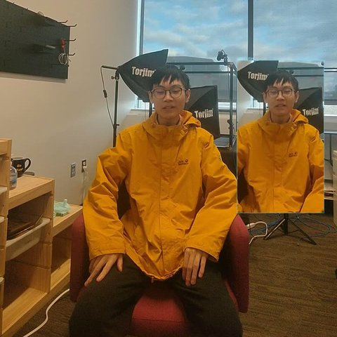

VoxSync: Lip Sync for Live Speech Translation
SPICE Lab, March 2026 to present
VoxSync re-renders a speaker's mouth to match translated speech while the conversation is happening, keeping pace with a 25 fps camera on one H100 GPU. I built the live demos for the browser, RayNeo X3 Pro AR glasses, and Zoom calls, and the GPU lip-sync service behind the lab's dubbing platform, now AstraClips.
The demo shows the glasses wearer's view. The speaker talks in Mandarin, and the inset shows the speaker's face re-rendered to match the English translation.